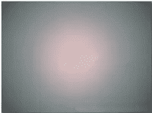
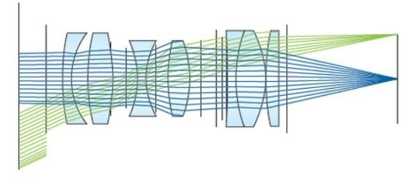
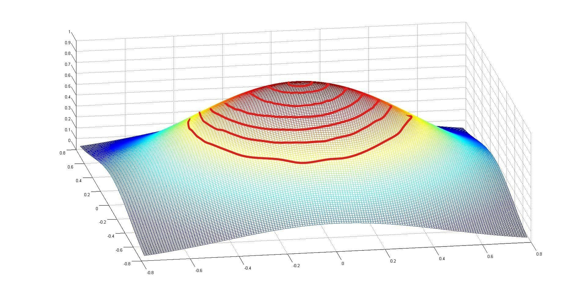
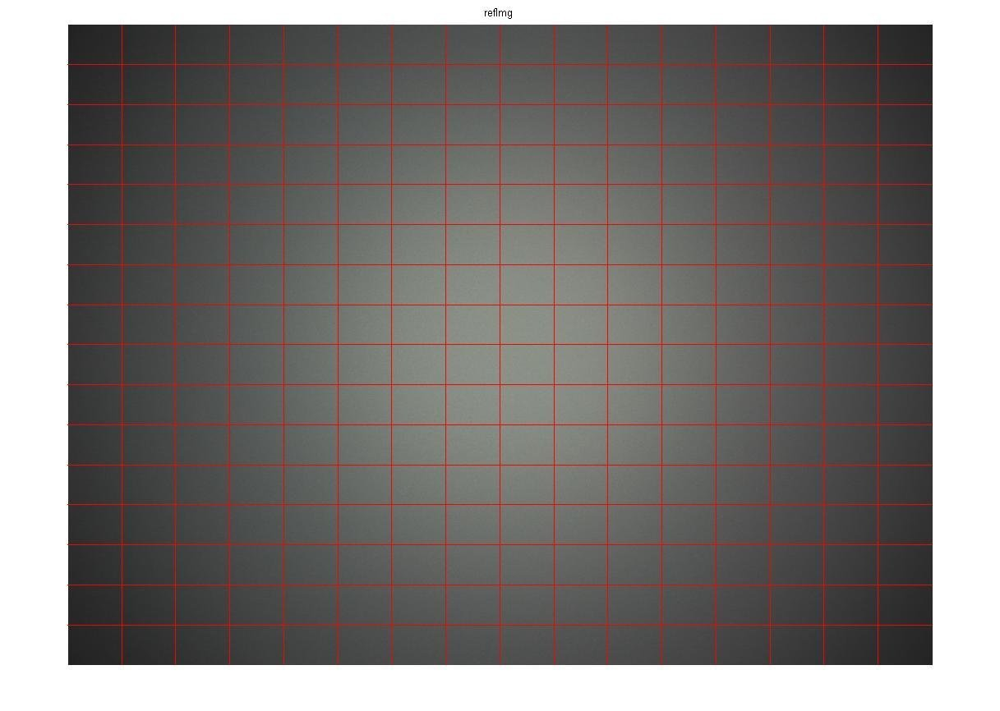
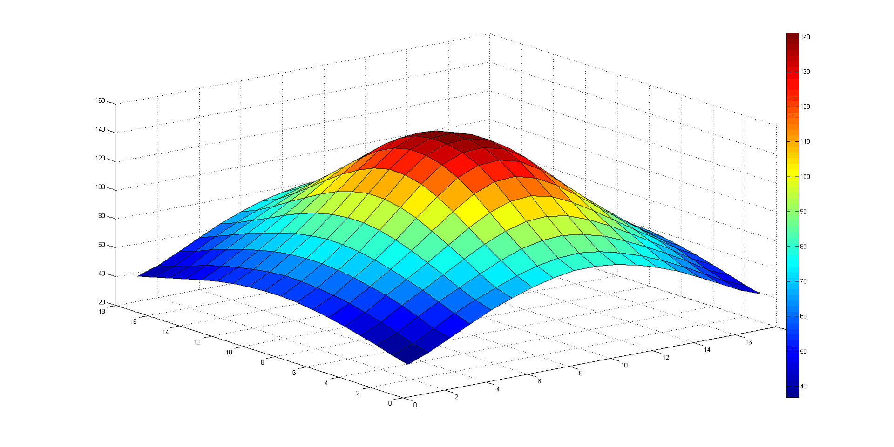
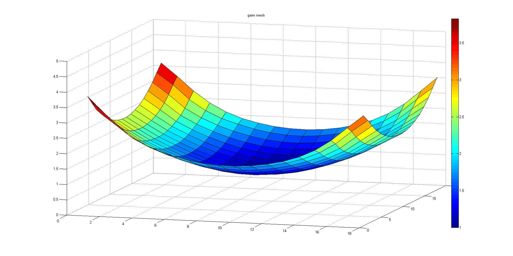
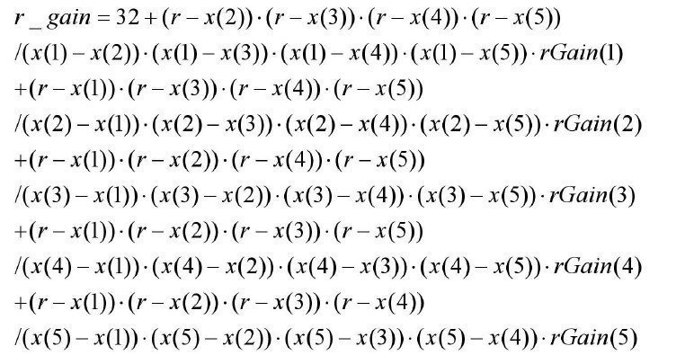

LSC：镜头矫正
LSC: Lens Shading Correction，也有叫做晕影的，英文 Vigenetting。本篇文章是概述，另外一篇 HTML 文件合理的利用了各个工具，值得学习。
现象

如图所示就是拍摄纯灰色卡（正常所有像素值一样）时 shading 的具体现象，左侧称为 Luma shading，右侧称为 color shading，相比较而言就是 color shading 除了亮度上有影响，还会影响颜色不一致。
原因分析
Luma shading 原因

引起 Luma shading 的主要原因时镜头的光学特性决定的，本专栏主要讲解 ISP，所以这一块只能用通俗的方式解释，可能不太准确。上图是百度下载的，这幅图能比较直观地感受 shading 的原因，如有侵权还望告知。
Luma shading 的主要原因是镜头中心到边缘的能量衰减导致的，如图所示，蓝色和绿色用相同的数量线条表示能量，中心位置的蓝色几乎所有能量都能达到最右侧的的成像单元，但是边缘的绿色由于有一定角度射入，经过镜头的折射，有一部分光（最上方的几条绿色线条）就没法达到成像单元，因此成像单元中心的能量就会比边缘的大，变现在亮度上就是亮度向边缘衰减变暗。通常镜头的衰减符合
式中θ表示的是入射光线和法线的夹角。
Color shading 原因
这个又是一个专门的话题了，叫做 CAC（Color Aberration Correction），请查阅对应的资料。
矫正方法
LSC 的本值就是能量有衰减，反过来为了矫正就用该点的像素值乘以一个 gain 值，让其恢复到衰减前的状态，所以矫正的本质就是找到这个 gain 值。
从目前的矫正方法来看个人觉得可以分成三大类：
- 储存增益法
- 多项式拟合法
- 自动矫正法
目前方法 1 和方法 2 是使用最多的，而且方法 3 我还没碰到过，只是见网上提到了就提一下，如果有谁有相关资料可以分享一下大家学习学习，所以本文主要以方法 1 和方法 2 进行讨论。
储存增益法
radial shading correct
上面有提到衰减符合 cos(θ) 的四次方规律，而θ在三维空间对各个方向是一致的，所以各个方向的衰减如下图

图中相同颜色可以理解成亮度是一样的，也就是图中红色一圈圈的像素需要的增益是一样的，所以就可以用半径为变量来求出不同半径像素需要的增益。然后把半径对应的增益值储存在内存中，到了要用的时候再拿出来用，从而完成矫正。但是不可能把所有像素的半径都存储起来，所以就通过采样的方式提取特征半径的增益存储到内存，然后其他半径对应的增益在矫正的时候通过插值算法求出来。这种方式对内存的硬件要求就低了。这就是 radial shading correct。
mesh shading correct

和半径不同，这种方式是把整幅图像分成 n*n 个网格，然后针对网格顶点求出矫正的增益，然后把这些顶点的增益储存到内存中，同理其他的点的增益也是通过插值的方式求出。

如图是上图分成网格后，每个网格亮度的分布，可以看出和 cos(θ) 的四次方很接近，然后针对这样的网格亮度求出增益如下图，刚好和亮度分布相反

多项式拟合
多项式拟合的方式就是用半径为采样点，然后把这些采样点通过高次拟合的方式拟合成一个高次曲线，然后把高次曲线的参数储存起来，用的时候把半径带入公式就能求出对应的 gain 值用于矫正。
这篇论文中采用拉格朗日插值法进行插值，具体公式如下图

其他通道也能这么拟合出曲线从而完成各个通道的矫正。
针对光学中心可能不是图像中心的问题，有的论文就提出先在图像中找出光学中心，然后以光学中心为真实中心完成标定，最后也是通过光学中心来求半径带入公式求 gain 值。
具体实现
标定代码如下
%% --------------------------------
%% author:wtzhu
%% date: 20210712
%% fuction: main file of MeshCali3Channel
%% --------------------------------
clc;clear;close all;
% side_num：表示分成了 n*n 的网格
% 1. 每个网格计算出一个gain
% 2. 对于一个点，计算四周的网格的gain，使用Bilinear插值求gain
% --------parameters of calibretion------------
filePath = 'images/lsc.bmp';
side_num = 16;
meshON = 1;
% ---------------------------------------------
image = imread(filePath);
[height, width, channel] = size(image);
side_y = floor(height/side_num);
side_x = floor(width/side_num);
h = imshow(image);
if meshON
for i = 1:side_num-1
line([i*side_x, i*side_x], [1, height], 'color', 'r');
line([1, width], [i*side_y, i*side_y], 'color', 'r');
end
end
title('refImg');
image_r = image(:,:,1);
image_g = image(:,:,2);
image_b = image(:,:,3);
%% compress resolution
image_point_r = zeros(side_num+1,side_num+1);
image_point_g = zeros(side_num+1,side_num+1);
image_point_b = zeros(side_num+1,side_num+1);
for i = 0:side_num
for j = 0:side_num
x_clip = floor([j*side_x - side_x/2, j*side_x + side_x/2]);
y_clip = floor([i*side_y - side_y/2, i*side_y + side_y/2]);
% make sure that the last point on the edge
if(i==side_num && y_clip(2) ~= height)
y_clip(2) = height;
end
if(j==side_num && x_clip(2) ~= width)
x_clip(2) = width;
end
x_clip(x_clip<1) = 1;
x_clip(x_clip>width) = width;
y_clip(y_clip<1) = 1;
y_clip(y_clip>height) = height;
data_r = image_r(y_clip(1):y_clip(2), x_clip(1):x_clip(2));
image_point_r(i+1,j+1) = mean(mean(data_r));
data_g = image_g(y_clip(1):y_clip(2), x_clip(1):x_clip(2));
image_point_g(i+1,j+1) = mean(mean(data_g));
data_b = image_b(y_clip(1):y_clip(2), x_clip(1):x_clip(2));
image_point_b(i+1,j+1) = mean(mean(data_b));
end
end
rGain = zeros(side_num+1,side_num+1);
gGain = zeros(side_num+1,side_num+1);
bGain = zeros(side_num+1,side_num+1);
%% caculate lsc luma gain
for i = 1:side_num+1
for j = 1:side_num+1
rGain(i,j) = image_point_r(uint8(side_num/2) +1, uint8(side_num/2) +1) / image_point_r(i,j);
gGain(i,j) = image_point_g(uint8(side_num/2) +1, uint8(side_num/2) +1) / image_point_g(i,j);
bGain(i,j) = image_point_b(uint8(side_num/2) +1, uint8(side_num/2) +1) / image_point_b(i,j);
end
end
save('./src/data/rGain.mat', 'rGain');
save('./src/data/gGain.mat', 'gGain');
save('./src/data/bGain.mat', 'bGain');
矫正代码（通过双线性插值法插值）
%% --------------------------------
%% author:wtzhu
%% date: 20210712
%% fuction: main file of Mesh3Correct
%% --------------------------------
clc, clear, close all;
% --------parameters of correction------------
filePath = 'images/lsc.bmp';
side_num = 16;
% --------------------------------------------
% --------load data---------------------------
% load org image
image = imread(filePath);
[height, width, channel] = size(image);
sideX = floor(height/side_num);
sideY = floor(width/side_num);
image_r = image(:,:,1);
image_g = image(:,:,2);
image_b = image(:,:,3);
% load gain of each channel
load('./src/data/rGain.mat');
load('./src/data/gGain.mat');
load('./src/data/bGain.mat');
% --------------correction-------------------
disImg = zeros(size(image));
gainStepX = 0;
gainStepY = 0;
for i = 1:height
for j = 1:width
gainStepX = floor(i / sideX) + 1;
if gainStepX > 16
gainStepX = 16;
end
gainStepY = floor(j / sideY) + 1;
if gainStepY > 16
gainStepY = 16;
end
% get tht gain of the point by interpolation(Bilinear interpolation)
% f(x,y) = [f(1,0)-f(0,0)]*x+[f(0,1)-f(0,0)]*y+[f(1,1)+f(0,0)-f(1,0)-f(0,1)]*xy+f(0,0)
rGainTmp = (rGain(gainStepX+1, gainStepY) - rGain(gainStepX, gainStepY)) * (i - (gainStepX - 1) * sideX)/sideX +...
(rGain(gainStepX, gainStepY+1) - rGain(gainStepX, gainStepY)) * (j - (gainStepY - 1) * sideY)/sideY +...
(rGain(gainStepX+1, gainStepY+1) + rGain(gainStepX, gainStepY) - rGain(gainStepX+1, gainStepY)- rGain(gainStepX, gainStepY + 1)) *...
(i - (gainStepX - 1) * sideX)/sideX * (j - (gainStepY - 1) * sideY)/sideY + rGain(gainStepX, gainStepY);
gGainTmp = (gGain(gainStepX+1, gainStepY) - gGain(gainStepX, gainStepY)) * (i - (gainStepX - 1) * sideX)/sideX +...
(gGain(gainStepX, gainStepY+1) - gGain(gainStepX, gainStepY)) * (j - (gainStepY - 1) * sideY)/sideY +...
(gGain(gainStepX+1, gainStepY+1) + gGain(gainStepX, gainStepY) - gGain(gainStepX+1, gainStepY)- gGain(gainStepX, gainStepY + 1)) *...
(i - (gainStepX - 1) * sideX)/sideX * (j - (gainStepY - 1) * sideY)/sideY + gGain(gainStepX, gainStepY);
bGainTmp = (bGain(gainStepX+1, gainStepY) - bGain(gainStepX, gainStepY)) * (i - (gainStepX - 1) * sideX)/sideX +...
(bGain(gainStepX, gainStepY+1) - bGain(gainStepX, gainStepY)) * (j - (gainStepY - 1) * sideY)/sideY +...
(bGain(gainStepX+1, gainStepY+1) + bGain(gainStepX, gainStepY) - bGain(gainStepX+1, gainStepY)- rGain(gainStepX, gainStepY + 1)) *...
(i - (gainStepX - 1) * sideX)/sideX * (j - (gainStepY - 1) * sideY)/sideY + bGain(gainStepX, gainStepY);
disImg(i,j,1) = double(image_r(i, j)) * rGainTmp;
disImg(i,j,2) = double(image_g(i, j)) * gGainTmp;
disImg(i,j,3) = double(image_b(i, j)) * bGainTmp;
end
end
figure();
subplot(121);imshow(image);title('org image');
subplot(122);imshow(uint8(disImg));title('corrected image');